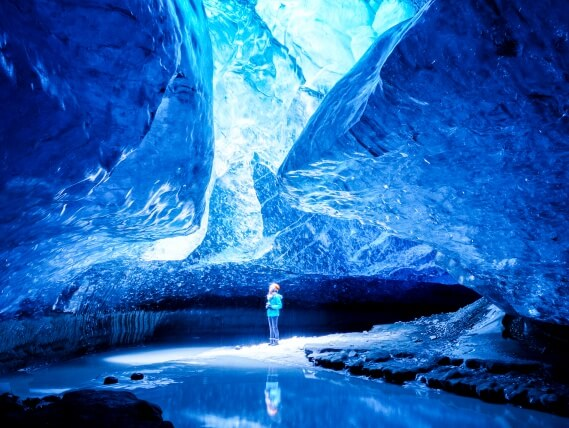

Ao no Dokutsu SHIBUYA Tokyo, Japan
The event transforms the street into a "blue cave" using approximately 500,000 to 770,000 blue LED lights. Enjoy!
Learn More
These caves are natural phenomena formed by summer meltwater running through the glacier, carving out transient sculptures.
Learn MoreThe event transforms the street into a "blue cave" using approximately 500,000 to 770,000 blue LED lights. Enjoy!
Learn MoreDesigned by a Spanish architecture firm, the center is a massive cultural complex covering approximately 88,000 square meters. Its distinctive hexagonal, honeycomb-like design is inspired by the seabed and marine life.
Learn More
It is the world's largest ice and snow theme park, spanning approximately 1.2 million square meters. Every winter, teams of artists use massive blocks of ice harvested from the nearby Songhua River to build a temporary "ice city" featuring palatial castles, towers, and intricate sculptures. After nightfall, these structures are illuminated by millions of LED lights, creating a glowing fairytale landscape.
Learn More
The mountains are primarily made of limestone and dolomite formed 200 million years ago from ancient sea sediments. Over time, water has eroded the rock to create a "Karst" landscape, which includes deep caves, steep cliffs, and dramatic gorges.
Learn More